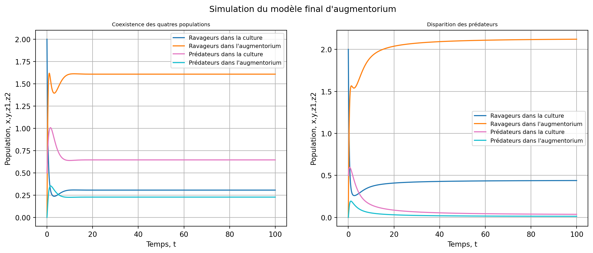

Code
import numpy as np
import matplotlib.pyplot as plt
from scipy.integrate import odeintModules à importer :
import numpy as np
import matplotlib.pyplot as plt
from scipy.integrate import odeintDans ce modèle on va considérer 4 populations correspondant aux proies et aux prédateurs dans l’augmentorium et dans la culture.
Voici le modèle:
\left\{\begin{array}{l} \dot x = r_xx\left(1-\frac{x}{K_x}\right)+\beta\left(\frac{y}{\gamma_y}-\frac{x}{\gamma_x}\right)-p_1xz_1 \\ \dot y = r_yy\left(1-\frac{y}{K_y}\right)+\beta\left(\frac{x}{\gamma_x}-\frac{y}{\gamma_y}\right)-p_2yz_2 \\ \dot z_1 = z_1\left(n_1x - m_1 \right) + \delta\left(\frac{z_2}{\mu _2}-\frac{z_1}{\mu _1}\right) \\ \dot z_2 = z_2\left(n_2y - m_2 \right) + \delta\left(\frac{z_1}{\mu _1}-\frac{z_2}{\mu _2}\right) \end{array}\right. \tag{1}
L’augmentorium permet aux prédateurs de circuler presque librement entre les l’intérieur et l’extérieur. On va donc considérer que \delta \to +\infty et voir si on peut se rapporter à un modèle plus simple.
On considère \dot z_1 - \dot z_2:
\dot z_1 - \dot z_2 = z_1(n_1x-m_1)-z_2(n_2y-m_2) - \delta\left(\frac{z_1}{\mu _1}-\frac{z_2}{\mu _2}\right)
Lorsque \delta = +\infty on a \dot z_1 - \dot z_2 qui devient: \dot z_1 - \dot z_2 = - \delta\left(\frac{z_1}{\mu _1}-\frac{z_2}{\mu _2}\right)
et donc on a \dot z_1 - \dot z_2 \to 0 \Leftrightarrow \frac{z_1}{\mu _1} = \frac{z_2}{\mu _2}.
Si on pose z=z_1+z_2 alors par la proposition précédente on a : \frac{z}{\mu _1+\mu _2} = \frac{\frac{z_1\mu _1}{\mu _1}+\frac{z_2\mu _2}{\mu _2}}{\mu _1 +\mu _2}=\frac{z_1}{\mu _1} = \frac{z_2}{\mu _2}
et donc : \dot z = \dot z_1 + \dot z_2 = \frac{z_1\mu _1}{\mu _1}\left(n_1x - m_1 \right) + \frac{z_2\mu _2}{\mu _2}\left(n_2y - m_2 \right) \Leftrightarrow \dot z = \frac{z}{\mu _1 +\mu _2}\left(\mu _1(n_1x-m_1)+\mu _2(n_y-m_2)\right) \Leftrightarrow \dot z = z \left(\underbrace{\frac{\mu _1n_1}{\mu _1 +\mu _2}}_{n_x}x + \underbrace{\frac{\mu _2n_2}{\mu _1 +\mu _2}}_{n_y}y - \underbrace{\frac{\mu _1m_1 + \mu _2m_2}{\mu _1 +\mu _2}}_{m}\right)
On a alors : \dot z = z(n_xx+n_yy-m)
Maintenant considérons les proies :
\left\{\begin{array}{l} \dot x = r_xx\left(1-\frac{x}{K_x}\right)+\beta\left(\frac{y}{\gamma_y}-\frac{x}{\gamma_x}\right)-\frac{p_1xz_1\mu _1}{\mu _1} \\ \dot y = r_yy\left(1-\frac{y}{K_y}\right)+\beta\left(\frac{x}{\gamma_x}-\frac{y}{\gamma_y}\right)-\frac{p_2yz_2\mu _2}{\mu _2} \\ \end{array}\right. \Leftrightarrow \left\{\begin{array}{l} \dot x = r_xx\left(1-\frac{x}{K_x}\right)+\beta\left(\frac{y}{\gamma_y}-\frac{x}{\gamma_x}\right)-\overbrace{\frac{p_1xz\mu _1}{\mu _1+\mu _2}}^{p_x} \\ \dot y = r_yy\left(1-\frac{y}{K_y}\right)+\beta\left(\frac{x}{\gamma_x}-\frac{y}{\gamma_y}\right)-\underbrace{\frac{p_2yz\mu _2}{\mu _1+\mu _2}}_{p_y} \end{array}\right.
Ceci donne donc le modèle d’augmentorium de la partie précédente :
\left\{\begin{array}{l} \dot x = r_xx\left(1-\frac{x}{K_x}\right)+\beta\left(\frac{y}{\gamma_y}-\frac{x}{\gamma_x}\right)-p_xxz \\ \dot y = r_yy\left(1-\frac{y}{K_y}\right)+\beta\left(\frac{x}{\gamma_x}-\frac{y}{\gamma_y}\right)-p_yyz \\ \dot z = z\left(n_xx+n_yy - m\right) \end{array}\right. \tag{2}
L’analyse de ce modèle est faite ici et toutes les propositions vues sont aussi applicables dans ce modèle.
Nous allons faire quelques simulations pour voir si le modèle suit les modèles précédents et voir son comportement pour des \delta \ne \infty.
On va voir la dynamique des 4 populations dans un premier temps :
#Définition du modèle avec prédateurs:
def aug3(etat, t, param):
x, y, z1, z2 = etat
rx,Kx,ry,Ky,gx,gy,b,px,py,nx,ny,mx,my,d,mux,muy = param
s=[rx*x*(1-x/Kx)+b*(y/gy-x/gx)-px*z1*x,
ry*y*(1-y/Ky)+b*(x/gx-y/gy)-py*y*z2,
z1*(nx*x-mx)+d*(z2/muy-z1/mux),
z2*(ny*x-my)+d*(z1/mux-z2/muy)]
return s
#Paramètres Simulation 1 :
rx1=1
ry1=1.5
Kx1=3
Ky1=2
gx1=0.5
gy1=3
b1=1
px1=1
py1=1.5
nx1=1.5
ny1=2
mx1=0.5
my1=0.5
d1=1
mux1=1.5
muy1=0.5
param_a1=np.array([rx1,Kx1,ry1,Ky1,gx1,gy1,b1,px1,py1,nx1,ny1,mx1,my1,d1,mux1,muy1])
#Paramètres Simulation 2 :
rx2=0.5
ry2=1
Kx2=3
Ky2=2
gx2=0.5
gy2=3
b2=1
px2=1
py2=1.5
nx2=1
ny2=1.5
mx2=0.5
my2=0.5
d2=1
mux2=1.5
muy2=0.5
param_a2=np.array([rx2,Kx2,ry2,Ky2,gx2,gy2,b2,px2,py2,nx2,ny2,mx2,my2,d2,mux2,muy2])
#Temps d'intégration 1:
t=np.arange(0,100,0.01)
#Condition initiale de 1:
x0=2
y0=0
z10=0.5
z20=0
c0=np.array([x0,y0,z10,z20])
#Simulation 1:
s1=odeint(aug3,c0,t,args=(param_a1,))
s2=odeint(aug3,c0,t,args=(param_a2,))
#Plot de la figure:
fig,(ax,ax1) = plt.subplots(1,2,figsize=(14,5))
fig.suptitle('Simulation du modèle final d\'augmentorium')
plt.subplots_adjust(wspace=0.2)
#Plot de l'axe 1:
ax.plot(t,s1[:,0],color='C0',label='Ravageurs dans la culture')
ax.plot(t,s1[:,1],color='C1',label='Ravageurs dans l\'augmentorium')
ax.plot(t,s1[:,2],color='C6',label='Prédateurs dans la culture')
ax.plot(t,s1[:,3],color='C9',label='Prédateurs dans l\'augmentorium')
#Plot de l'axe 1:
ax1.plot(t,s2[:,0],color='C0',label='Ravageurs dans la culture')
ax1.plot(t,s2[:,1],color='C1',label='Ravageurs dans l\'augmentorium')
ax1.plot(t,s2[:,2],color='C6',label='Prédateurs dans la culture')
ax1.plot(t,s2[:,3],color='C9',label='Prédateurs dans l\'augmentorium')
#Légendes et titres:
ax.set_ylabel('Population, x,y,z1,z2')
ax.legend(fontsize=8)
ax.grid()
ax.set_xlabel('Temps, t')
ax.set_title('Coexistence des quatres populations',fontsize=7.5)
ax1.set_ylabel('Population, x,y,z1,z2')
ax1.legend(fontsize=8)
ax1.grid()
ax1.set_xlabel('Temps, t')
ax1.set_title('Disparition des prédateurs',fontsize=7.5)Text(0.5, 1.0, 'Disparition des prédateurs')
On observe deux situations, l’une avec un équilibre de coexistence des quatres populations et l’autre avec disparition des preédateurs.